올림픽수영장
올림픽수영장은 88서울올림픽 수영경기가 열린 곳으로, 국제 규격의 50m 레인과 깨끗한 수질, 우수한 강사진들의 열정적인 지도로 대한민국을 대표하는 생활체육의 장으로 자리매김하고 있습니다. 그러나 이에 만족하지 않고 더욱 쾌적하고 안전한 환경에서 운동을 즐기실 수 있도록 2007년 리모델링 공사를 실시한 바 있습니다.
리모델링 공사를 통하여 수영 외에도 헬스, 스피닝바이크, 가요교실 등 다양한 스포츠, 문화교실 프로그램을 운영하고 있습니다. 또한 스포츠용품점, 편의점, 식당, 잡화점 등 고객편의시설을 확충하여 여러분께서 올림픽수영장을 편리하게 이용하실 수 있도록 노력하고 있습니다.
-
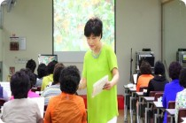
- 가요교실
- 전문강사와 함께하는 신나고 즐거운 인기짱! 가요교실입니다
-
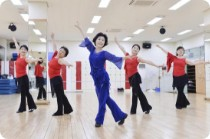
- 라인댄스
- 초보자도 쉽게 배울 수 있는 신나는 라인댄스로 생활의 활력을 만들어드립니다
-
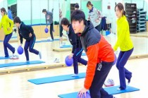
- 바디퍼스널
- 정확한 운동방법과 자세 교정을 통해 비만 해결, 스트레스 해소 및 운동능력 향상 등에 도움이 되는 여성을 위한 체계적인 운동교실 프로그램입니다.
-
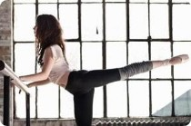
- 발레핏
- 발레(Ballet)와 피트니스(Fitness)를 합친 신개념 복합 운동으로 발레 동작에 근력운동을 결합하여 체형교정과 함께 건강한 몸을 만들 수 있는 프로그램입니다.
-
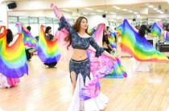
- 벨리댄스
- 복부 근육, 힙과 가슴의 움직임을 강조하는 회전운동으로 몸매 교정은 물론 변비 해소, 다이어트에도 효과 만점인 전통춤입니다.
-
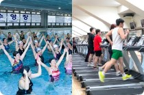
- 복합프로그램
- 복합프로그램으로 2가지 종목을 저렴하게 이용할 수 있습니다.
-
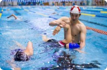
- 수영
- 국제규격의 50m 레인, 국내 최고의 깨끗한 수질과 생활체육 선도주자인 국민체육진흥공단이 운영하는 곳으로 전문강사에 의한 체계적인 강습
-
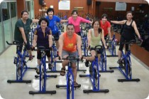
- 스피닝바이크
- 음악,댄스,조명이 함께하는 프로그램으로 체지방감량에 아주 효과적인 운동입니다
-
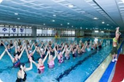
- 아쿠아로빅
- 물에서 실시할 수 있는 건강체조! 운동으로 인한 관절의 충격을 완화시켜 안전하고, 보다 젊고 튼튼한 관절을 위하여 전문강사에게 배워보는 즐거운 수중운동
-
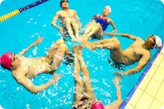
- 올림픽싱크로교실
- 수영과 체조, 발레, 음악이 어우러져 아름다움과 스포츠의 역동적 움직임을 표현하는 종합예술 프로그램입니다.
-
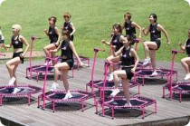
- 점핑트램폴린
- 트램폴린 위에서 다양한 점핑 응용동작을 하면서 칼로리 소모 및 코어근육과 하체를 단련하는 운동입니다.
-
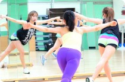
- 피규어로빅스
- 유산소 운동 및 웨이트 운동으로 최단시간 몸매 변화를 줄 수 있는 유용한 프로그램입니다.
-
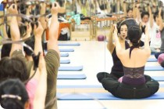
- 필라테스
- 코어(복부,척추,골반)운동으로 근력향상 및 자세교정과 유연성 향상에 도움이 되는 프로그램입니다.
-
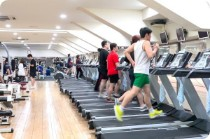
- 헬스
- 전문 트레이너와 함께하는 건강한 몸짱 만들기
-
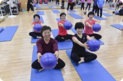
- 헬스테라피
- 다양한 운동기구 및 스트레칭 수업으로 올바른 자세를 잡아주고, 요통, 오십견을 예방, 치료하는 프로그램입니다.
-
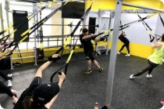
- TRX서스펜션
- 하나의 축을 둔 두 가닥의 줄을 이용해 근력, 유연성, 코어, 밸런스 등 모든 휘트니스 타켓을 가장 효율적으로 운동할 수 있도록 고안된 운동입니다.